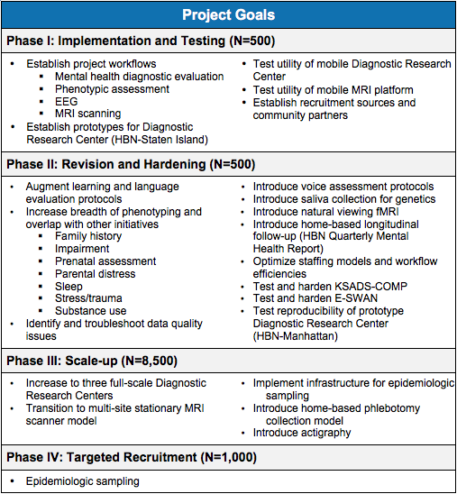

Project Plan¶
The HBN has a four-phase project plan (see table). The goals for each of the phases are as follows:
- Phase I: Implementation and Testing (Participants 1-500; completed). The overarching goal of the initial phase was to establish a prototype HBN Diagnostic Research Center, located in Staten Island, New York (one of the five boroughs of New York City). Prototype development was intended to establish all project workflows and strategies/procedures for recruitment, diagnostic evaluations, phenotypic assessments, and a post-study referral network. The initial protocol included diagnostic evaluations, phenotypic assessments, electroencephalography (EEG) and magnetic resonance imaging (MRI). During the initial phase, we also evaluated the feasibility and benefits of using a mobile MRI scanner, as well as a mobile Diagnostic Research Center.
- Phase II: Revision and Hardening (Participants 501-1000; completed). A key challenge for almost any large-scale study is balancing the desire to maintain stable protocols and assessments across the entirety of a sample, with the potential benefits of integrating new measures and making changes based on learning from experiences and scientific advances along the way. Phase II of the Healthy Brain Network had two primary goals: 1) the addition and/or deletion of protocols established during Phase I, based on lessons learned and new developments; and, 2) hardening the revised protocols to ensure that they are as optimal and robust as possible, while also reflecting the current state of the art in science and practice.
- Phase III: Scale-up (Participants 1001-8500; in progress). Building on the experience and lessons learned from phases I and II of the project, the Healthy Brain Network has started Phase III, with the goal of enrolling 7,500 participants in our established protocol. This goal necessitates increased capacity for both recruitment and enrollment. As such, Phase III includes additional Diagnostic Research Centers and MRI scan sites in the New York City region; sites are being chosen to increase the diversity of populations that can be reached.
- Phase IV: Targeted Recruitment (Participants 8501-10000; planning). The final phase of the Healthy Brain Network will incorporate epidemiologic sampling to recruit an additional targeted representative sample of 1,500 participants.

- Home
- Link to Manuscript
- Project Plan
- Data Release Timeline
- Release Notes
- Fixes and Updates
- Inclusion/Exclusion Criteria
- Recruitment
- Participant Schedule
- EEG Protocol
- MRI Protocol
- Assessments
- Protocol Timeline
- Behavior Monitoring Technologies
- Sample Characteristics
- Neuroimaging Data Access
- Phenotypic Data Access
- Data Quality
- Citation of Data Usage
- Support